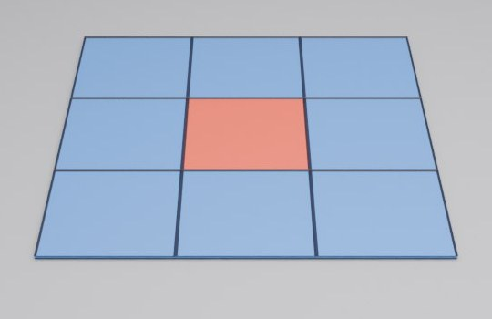
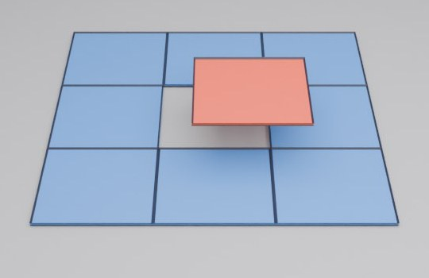

Bonus lesson
Split Selection
Split disconnects the selection from the rest of the mesh. The border edges to any non-selected elements are duplicated. In Edit Mode, find it under Mesh › Split › Selection, or press Y.
1. Face selected

2. After Split, then moved

How it works
The manual notes that the copy is left exactly at the same position as the original, so you must move it with G to see it clearly.
Other Split options
- Faces by Edges: similar to the Rip tool. When two or more touching interior edges, or a border edge, are selected, a hole is created and the selected edges are duplicated to form the border of the hole.
- Faces & Edges by Vertices: similar to Faces by Edges, but it also splits the vertices of the adjacent connecting edges. It does the same as manually ripping all faces and edges away from a vertex.
Read the manual page on Split.
Try it
This exercise is our own suggestion and has not been run step by step in the GUI. Add a plane, enter Edit Mode and subdivide it a few times. In Face select mode, select one face, press Y, then press G and move it. Use Ctrl+Z to undo.